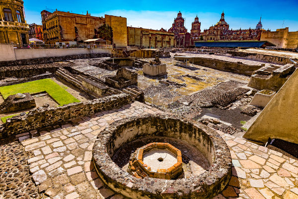

Os astecas foram a principal civilização mesoamericana e uma das principais civilizações pré-colombianas.
Construíram sua capital em meados do século XIV e tinham uma cultura rica, que herdou elementos de diversos
povos da Mesoamérica (região da América Central que corresponde a países como México, Guatemala, El Salvador etc.),
tais como toltecas e maias. Sua sociedade era hierarquizada, cada qual possuindo seu papel específico.

ós travar guerra contra os tepanecas, os astecas ganharam força, conquistando cidades vizinhas e cobrando-lhes impostos.
Sobreviviam da agricultura, mas também realizavam comércio com outros povos e outras cidades. Sua religião era politeísta e tinha no
sacrifício humano um ritual extremamente importante. Os astecas foram conquistados em 1521, após os espanhóis – aliados com outros povos
indígenas – terem conquistado a cidade de Tenochtitlán.